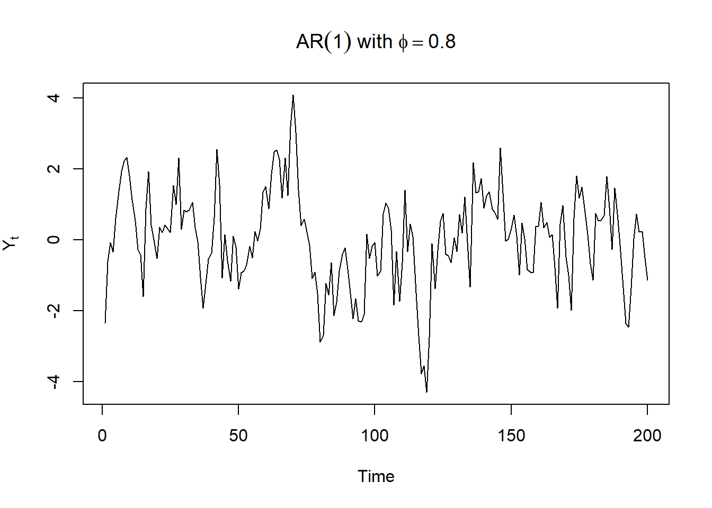
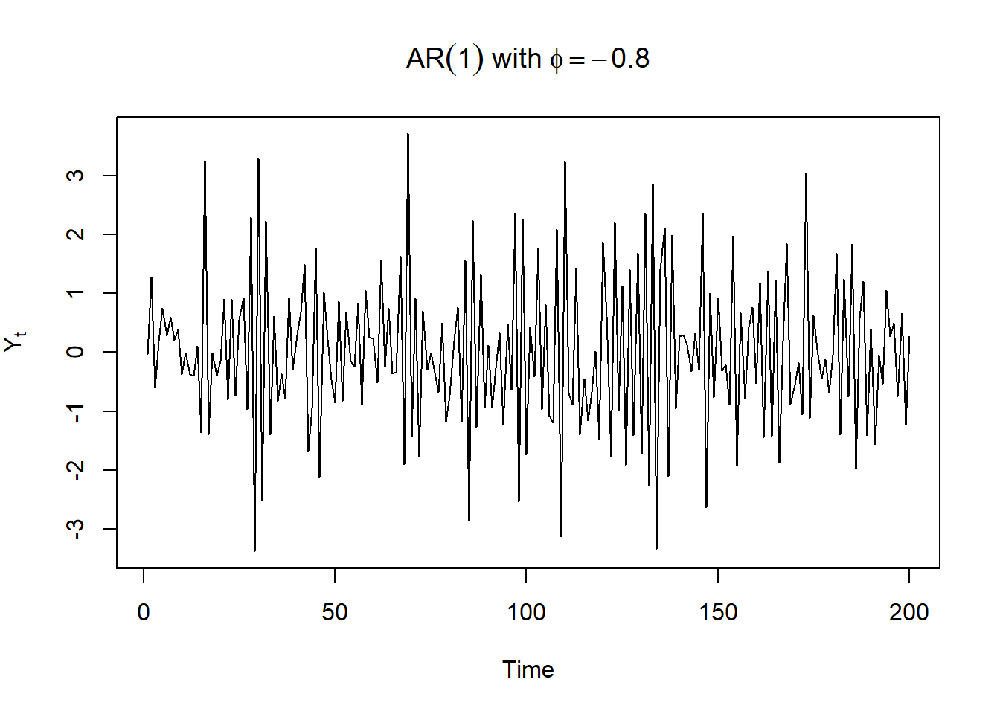
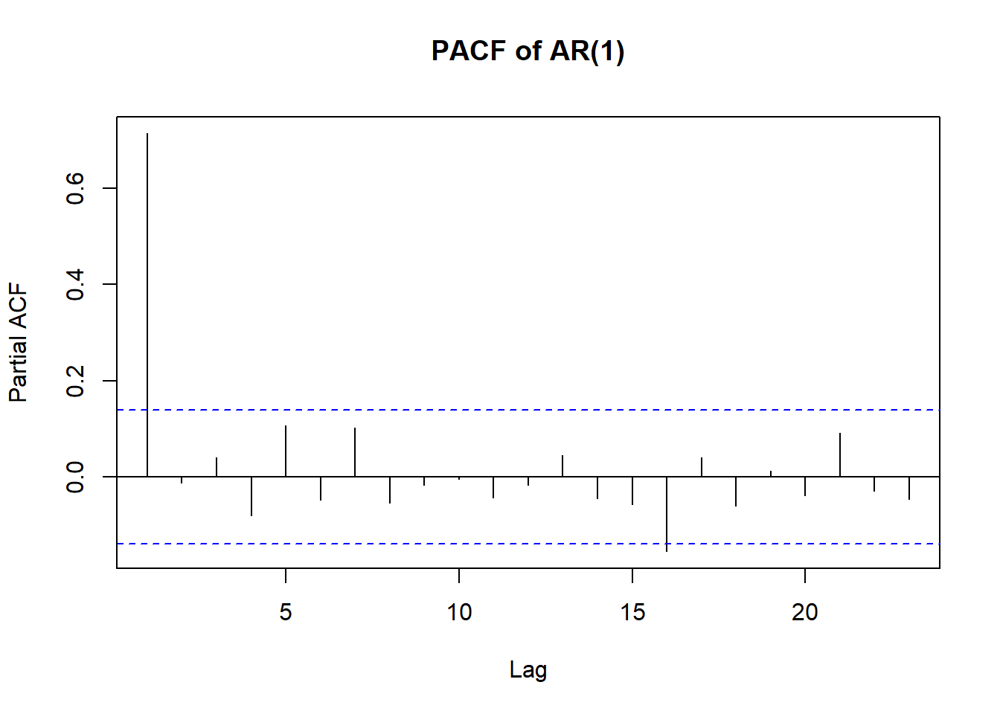
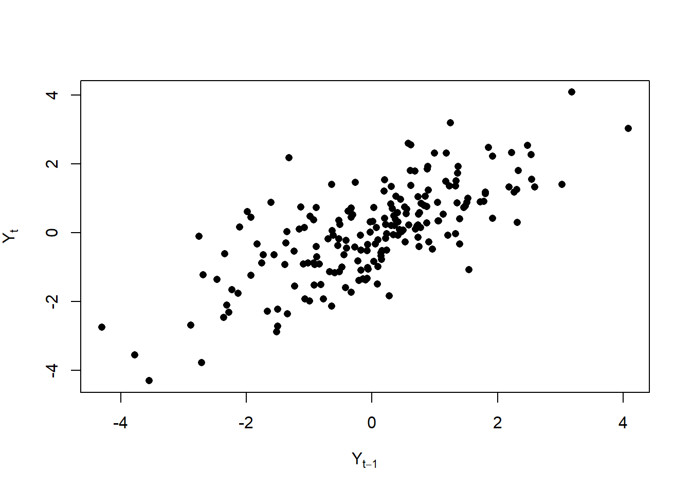
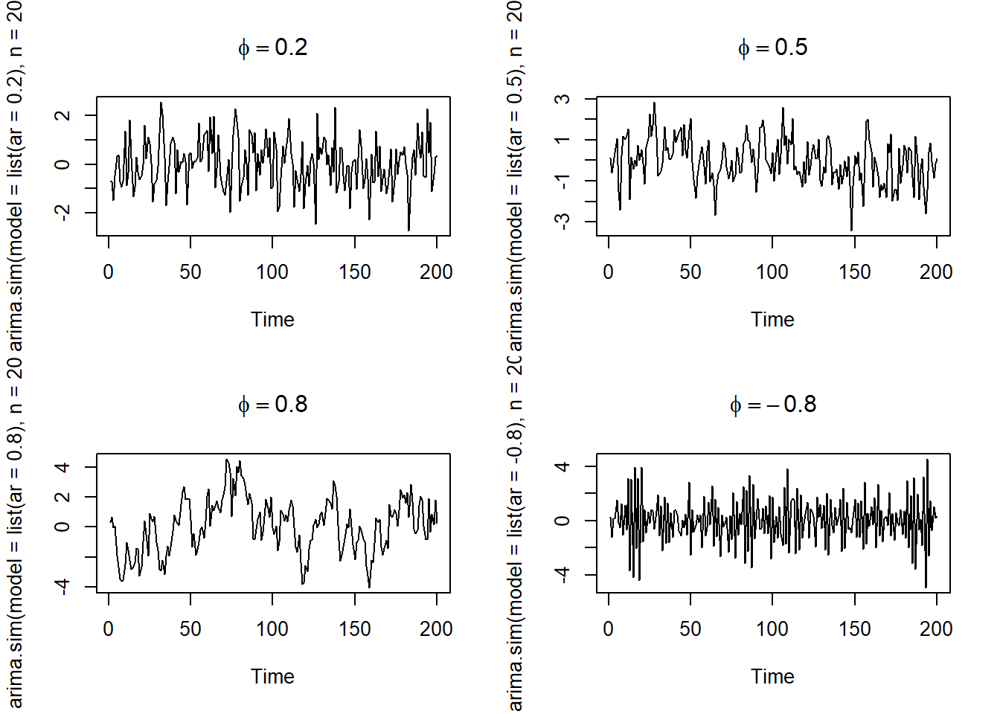

set.seed(123)
ar1 <- arima.sim(
model = list(ar = 0.8),
n = 200
)
plot.ts(
ar1,
main = expression(AR(1)~with~phi==0.8),
ylab = expression(Y[t])
)
AR(1) загвар нь хамгийн энгийн бөгөөд хамгийн чухал авторегрессив загвар юм.
AR(1) процесс дээр одоогийн ажиглалт нь шууд өмнөх ажиглалт болон санамсаргүй алдаанаас хамаардаг.
Энэ загвар нь дээд эрэмбийн авторегрессив загварууд болон олон таамаглах аргуудыг ойлгох үндэс болдог.
AR(1) процессыг
\[ Y_t=\phi Y_{t-1}+\varepsilon_t \]
гэж тодорхойлдог бөгөөд энд
\(\phi\) параметр нь дараалсан ажиглалтуудын хоорондын хамаарлын хүчийг тодорхойлдог.
AR(1) процесс нь
\[ |\phi|<1 \]
бол стационар байна.
Хэрэв
\[ |\phi|\ge 1 \]
бол процесс стационар бус байна.
| \(\phi\)-ийн утга | Тайлбар |
|---|---|
| \(0\) | Цагаан чимээ |
| \(0.3\) | Сул хамаарал |
| \(0.8\) | Хүчтэй үргэлжлэл |
| \(-0.8\) | Ээлжлэх зан төлөв |
| \(1\) | Санамсаргүй алхалт (стационар бус) |
Математик хүлээлт авбал
\[ E(Y_t) = \phi E(Y_{t-1}). \]
Стационар нөхцөлд
\[ E(Y_t)=\mu. \]
Иймд
\[ \mu=\phi\mu. \]
Тиймээс
\[ \mu=0. \]
Учир нь
\[ Y_t=\phi Y_{t-1}+\varepsilon_t, \]
стационар дисперс нь
\[ Var(Y_t) = \frac{\sigma^2} {1-\phi^2}. \]
\(|\phi|\) 1-д ойртох тусам дисперс нэмэгддэг.
Стационар AR(1) процессын хувьд
\[ \gamma(k) = \phi^{k}\gamma(0). \]
Учир нь
\[ \gamma(0) = \frac{\sigma^2} {1-\phi^2}, \]
бүх автоковариацууд \(\phi\)-ээр тодорхойлогдоно.
AR(1) процессын ACF нь
\[ \rho(k)=\phi^k. \]
Энэ нь хугацааны цувааны шинжилгээний хамгийн чухал үр дүнгүүдийн нэг юм.
Хэрэв
\[ \phi=0.8, \]
бол
\[ \rho(1)=0.8, \]
\[ \rho(2)=0.64, \]
\[ \rho(3)=0.512. \]
Иймд ACF тэг рүү аажмаар буурдаг.
AR(1) процессын хувьд
\[ PACF(1)=\phi, \]
ба
\[ PACF(k)=0, \qquad k>1. \]
Иймд PACF нь 1 хоцролтын дараа тасардаг.
Энэ шинж чанарыг AR(1) загварыг тодорхойлоход өргөн ашигладаг.
set.seed(123)
ar1 <- arima.sim(
model = list(ar = 0.8),
n = 200
)
plot.ts(
ar1,
main = expression(AR(1)~with~phi==0.8),
ylab = expression(Y[t])
)
Дараалсан ажиглалтуудын үргэлжлэлийг ажиглаарай.
set.seed(123)
ar1neg <- arima.sim(
model = list(ar = -0.8),
n = 200
)
plot.ts(
ar1neg,
main = expression(AR(1)~with~phi==-0.8),
ylab = expression(Y[t])
)
Дараалсан ажиглалтууд тэмдгээрээ ээлжлэн солигдох хандлагатай байдаг.
acf(
ar1,
main="AR(1)-ийн ACF"
)
ACF геометрээр буурдаг.
Энэ аажмаар буурах зан төлөв нь авторегрессив процессуудын онцлог шинж юм.
pacf(
ar1,
main="AR(1)-ийн PACF"
)
Зөвхөн эхний хоцролт ач холбогдолтой байх ёстой.
Хоцролтын график нь \(Y_t\) ба \(Y_{t-1}\) хоорондын хамаарлыг илрүүлдэг.
plot(
x = ar1[-length(ar1)],
y = ar1[-1],
xlab = expression(Y[t-1]),
ylab = expression(Y[t]),
pch = 16
)
Эерэг шугаман хэв маяг харагдах ёстой.
par(mfrow=c(2,2))
plot.ts(
arima.sim(model=list(ar=.2), n=200),
main=expression(phi==0.2)
)
plot.ts(
arima.sim(model=list(ar=.5), n=200),
main=expression(phi==0.5)
)
plot.ts(
arima.sim(model=list(ar=.8), n=200),
main=expression(phi==0.8)
)
plot.ts(
arima.sim(model=list(ar=-0.8), n=200),
main=expression(phi==-0.8)
)
\(\phi\) өөрчлөгдөх тусам хамаарлын зэрэг хэрхэн өөрчлөгдөж байгааг ажиглаарай.
AR(1) загварыг хамгийн их магадлалын аргаар үнэлж болно.
fit <- arima(
ar1,
order=c(1,0,0)
)
fit
Call:
arima(x = ar1, order = c(1, 0, 0))
Coefficients:
ar1 intercept
0.7235 -0.0239
s.e. 0.0491 0.2363
sigma^2 estimated as 0.8744: log likelihood = -270.73, aic = 547.46\(\phi\)-ийн үнэлсэн утга нь симуляцад ашигласан жинхэнэ утгатай ойрхон байх ёстой.
AR(1) загварын хувьд
\[ \hat{Y}_{t+1} = \phi Y_t. \]
Ерөнхийдөө
\[ \hat{Y}_{t+h} = \phi^h Y_t. \]
\(h\) нэмэгдэх тусам
\[ \phi^h \rightarrow 0, \]
бөгөөд таамаглалууд процессын дундаж руу ойртдог.
Хэрэв
\[ \phi>0, \]
бол том утгууд том утгуудыг дагах, жижиг утгууд жижиг утгуудыг дагах хандлагатай байдаг.
Хэрэв
\[ \phi<0, \]
бол дараалсан ажиглалтууд эсрэг чиглэлд хөдлөх хандлагатай байдаг.
Хэрэв
\[ \phi\approx 0, \]
бол процесс цагаан чимээтэй төстэй болдог.
AR(1) процесс
\[ Y_t=\phi Y_{t-1}+\varepsilon_t \]
нь хамгийн энгийн авторегрессив загвар юм.
Гол шинж чанарууд:
Эдгээр шинж чанарууд AR(1)-ийг хугацааны цувааны шинжилгээний үндсэн загвар болгодог.
arima() ашиглан AR(1) загварыг үнэлж, үнэлсэн параметрийг жинхэнэ утгатай харьцуул.